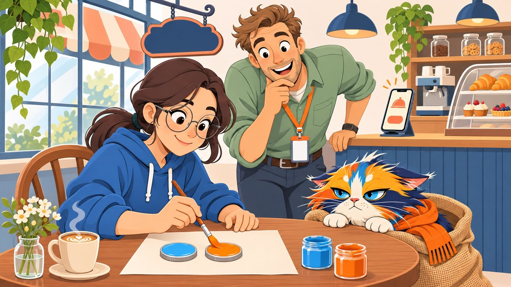

Котейке достаётся один исход из четырёх — РР, поэтому он свободен в трёх вечерах из четырёх. А у Боба «разные» — сразу два исхода, ОР и РО: он моет вдвое чаще Котейки и Алисы.
Шаг 1 из 9
Исходы и события
После шага ты сможешь перечислить все равновероятные исходы и посчитать вероятность как долю нужных.

АлисаАналитик. На любое «очевидно» отвечает: «А сколько это в штуках?»
БобПродакт. Быстро делает выводы — иногда слишком быстро.
КотейкаКот в мешке. Отвечает за случайность: бросает монетки и кубики.
Три исхода — по трети вечеров?

Боб, продакт
Бросаем две монетки. Два орла — моет Алиса, две решки — Котейка, разные — я. Исходов три, каждому по трети вечеров. Честно!

Котейка
Мур. Я согласен. Очень согласен.

Алиса, аналитик
Что‑то Котейка слишком доволен. Давай сначала прикинем, а потом бросим монетки сто раз.
Как думаешь, в скольких вечерах из 100 посуду будет мыть Боб? Сам он уверен, что около 33.
Напиши число — на следующей карточке бросим монетки и проверим.
Две монетки моют посуду
Один бросок пары — один вечер. Первая монетка синяя, вторая красная. Понажимай «+1 вечер»: исход улетает к тому, кто моет, а плитка исхода появляется у героя, только когда он выпал впервые. Число в поле «Вечеров всего» растёт. Потом впиши туда сколько угодно — 100, 1000, 100 000 — и нажми «Бросить»: недостающие вечера добавятся. На сотне доли ещё заметно гуляют, а чем больше вечеров, тем ближе к теории.
??Брось пару монеток
Алиса
пока пустоОО0
Боб
пока пустоОР0РО0
Котейка
пока пустоРР0
Плитка исхода появится у героя, когда исход выпадет впервые.
Доля вечеров у каждого героя
Столбик — доля вечеров · красный пунктир — «по трети», как обещал Боб
Одинаковые на вид монетки — всё равно две разные

Боб насчитал три исхода: два орла, две решки, разные. Но «разные» выпадают двумя способами: ОР — первая монетка орёл, вторая решка, и РО — наоборот. В игре это видно сразу: у Боба две плитки, и в каждую прилетает примерно поровну с Алисой и Котейкой.
Когда монетки на вид одинаковые, эти два случая легко слить в один. Помогает простой приём: бросай монетки по очереди — сначала первую, потом вторую. Тогда «орёл, потом решка» и «решка, потом орёл» — явно два разных исхода. Монеткам всё равно, бросают их по очереди или вместе: их две, и у каждой своя сторона. В игре первая монетка нарисована синей, вторая — красной, только чтобы не путать, где какая. Исходов четыре — ОО, ОР, РО, РР, — и все одинаково вероятны. Бобу достаются два из четырёх, то есть половина вечеров.
4 исхода → 3 события
ОО
моет АлисаОРРО
моет Боб — 2 исходаРР
моет КотейкаНа этом спотыкались и знаменитые учёные. В XVIII веке Жан Д'Аламбер написал в Энциклопедии, что за два броска хотя бы один орёл выпадает с шансом 2 из 3. Возможные исходы он описал так: «орёл сразу», «решка, потом орёл», «две решки» — орёл есть в двух из трёх. Но «орёл сразу» — это два исхода, ОО и ОР. Верный ответ — 3 из 4.
Опыт, исход, событие
Опыт — то, что можно повторять: бросок пары монеток, бросок кубика, гость открыл приложение кафе.
Исход, или элементарное событие, — один из вариантов, чем опыт может закончиться: ОР, «выпала четвёрка», «гость заказал».
Событие — набор исходов, то есть множество элементарных событий: «разные» = {ОР, РО}, «выпало чётное» = {2, 4, 6}. Событие может быть элементарным, из одного исхода: «два орла» = {ОО}, — или составным, из нескольких: «разные» = {ОР, РО}. Событие произошло, если выпавший исход входит в набор: выпало РО — значит, «разные» произошло.
Вероятность события — число от 0 до 1: какая доля опытов закончится этим событием, если повторять очень много раз. Пишут P(«разные») = 0.5.
Две монеткиКубикГость в приложении
Все исходыОО, ОР, РО, РР1, 2, 3, 4, 5, 6заказал, ушёл
Событие«разные»«чётное»«заказал»
Вероятность2 из 4 = ½3 из 6 = ½около 10%
У гостя два исхода, но они не равновероятны: заказывает примерно каждый десятый. Поэтому его вероятность не посчитать делением «1 из 2» — её узнают по частоте, на длинной серии гостей. Об этом шаг 2.
Число орлов в паре — 0, 1 или 2 — уже не исход, а число, которое выдаёт опыт. Такие числа называют случайными величинами — подробно в шаге 7.
Благоприятные делить на все
История
В штуках
Из 1000 вечеров на каждый исход придётся около 250.
ОО≈ 250
Алиса — 25%ОР≈ 250РО≈ 250
Боб — 50%РР≈ 250
Котейка — 25%Формула
P(A) = благоприятные исходы / все исходы
P(«Котейка не моет») = 3/4 = 0.75
Благоприятные исходы — те, что входят в событие A. Для события «Котейка не моет» это ОО, ОР и РО: три из четырёх. Формула работает, только если все исходы одинаково вероятны.
Выбери событие — подсветятся благоприятные исходы
ОО
ОР
РО
РР
Отсюда два края шкалы. Невозможное событие, например «три орла на двух монетках», — это 0 исходов из 4, его вероятность 0. Достоверное событие, например «выпал орёл или решка», — 4 исхода из 4, его вероятность 1. Вероятность любого другого события лежит между ними.
Торт или пирожное?
Котейка
Новая игра для гостей: бросаем два кубика, синий и красный. Выпала сумма 12 — торт, сумма 11 — пирожное.
Боб, продакт
Шансы одинаковые! Двенадцать — это шесть и шесть, одиннадцать — пять и шесть. Закупим тортов и пирожных поровну.
Как думаешь, что будет выпадать чаще?
Выбери ответ — на следующей карточке подкинем кубики и проверим.
Подкинь кубики
Один бросок — синий и красный кубик, на графике копится, какая сумма сколько раз выпала. Понажимай «+1 бросок», потом впиши 1000 или 100 000 и нажми «Бросить». Следи за 11 и 12.
??Подкинь кубики
Доля бросков с каждой суммой
Почему так: 36 клеток
Каждая пара кубиков — клетка таблицы, все 36 клеток равновероятны. Выбери сумму — и увидишь, сколько клеток её дают.
Сколько клеток из 36 даёт каждую сумму от 2 до 12
Даже Лейбниц ошибался: считал, что суммы 11 и 12 выпадают одинаково часто, ведь каждая получается «одним способом» — 5 и 6 или 6 и 6. Но если различать кубики, у суммы 11 две клетки: синий 5 с красным 6 и синий 6 с красным 5. А у суммы 12 клетка одна.
Идея из книги: Джозеф Блицштейн, Джессика Хван, «Introduction to Probability»
Два взгляда на вероятность
Вероятность понимают двумя способами. Нажми на плитку — откроется пример из кафе.
Правила счёта у обоих взглядов одни и те же, поэтому формулы курса работают и для частоты, и для уверенности. В этом шаге мы посчитали «2 из 4» по правилу, а потом проверили частотой: бросили сто тысяч раз — сошлось.
Идея из книги: Джозеф Блицштейн, Джессика Хван, «Introduction to Probability»
Перебери клетки сам
Допиши функцию: вероятность, что сумма двух кубиков равна s. Перебери все 36 пар двумя циклами и посчитай, сколько из них дают нужную сумму. Нажми «Проверить» — проверка прогонит функцию на всех суммах.
Внутри двух циклов перебираются все 36 пар. Нужна одна строка: если сумма пары равна
s, прибавь к good единицу:if blue + red == s:
good += 1
Вероятность — доля нужных клеток среди всех: верни good / 36.
def p_sum(s):
# вероятность, что сумма двух честных кубиков равна s
good = 0 for blue in range(1, 7):
for red in range(1, 7):
if blue + red == s:
good += 1 return good / 36 print(p_sum(7)) # 0.1666… — 6 клеток из 36 print(p_sum(2)) # 0.0277… — одна клетка
Боб придумал новое правило
Боб, продакт
Ладно, бросаем три монетки. Все одинаковые — моет Котейка, иначе — я. Событий два, «одинаковые» и «разные», значит, пятьдесят на пятьдесят. Честнее не бывает!
Что не так в рассуждении Боба?
У каждой монетки две стороны: исходов 2 · 2 · 2 = 8. «Все одинаковые» — только ООО и РРР, 2 из 8 = ¼. Котейка моет в 250 вечерах из 1000, Боб — в 750. Котейка, конечно, сразу согласился.
Три задачи и как на них отвечать
Схема ответа одна на весь курс: переформулируй → посчитай в штуках → запиши формулу → проверь симуляцией → скажи вывод одной фразой.
Бросают два кубика. Какова вероятность, что сумма равна 7?
Переформулирую: какая доля клеток таблицы 6 × 6 даёт сумму 7, если все клетки равновероятны.
В штуках: пар «синий, красный» 36, сумма 7 у шести: 1 + 6, 2 + 5, 3 + 4, 4 + 3, 5 + 2, 6 + 1. Из 3600 бросков — около 600.
Формула: P(«сумма 7») = 6/36 = 1/6 ≈ 16.7%.
Проверка: функция p_sum(7) из карточки с кодом.
Вывод: примерно каждый шестой бросок; семёрка — самая частая сумма.
Бросают три монетки. Какова вероятность, что орлов хотя бы два?
Переформулирую: сколько из всех исходов трёх монеток содержат два или три орла.
В штуках: исходов 2 · 2 · 2 = 8. Подходят ООО, ООР, ОРО, РОО — четыре. Из 1000 бросков троек — около 500.
Формула: P(«хотя бы два орла») = 4/8 = 1/2.
Быстрый способ: «орлов хотя бы два» и «решек хотя бы две» — зеркальные события, и ровно одно из них случается в каждом броске. Значит, у каждого ½.
Вывод: ровно половина; монетки честные, и задача симметрична.
Бросают два кубика и смотрят на сумму. Всего бывает 11 сумм, от 2 до 12. Кандидат говорит: «Значит, у каждой суммы шанс 1/11». Прав ли он? Сравните шансы сумм 2 и 7.
Переформулирую: равновероятны ли суммы? Нет. Равновероятны клетки таблицы 6 × 6, а суммы собираются из разного числа клеток, поэтому 1/11 — неверно.
В штуках: сумму 2 даёт одна клетка — синий 1 и красный 1, сумму 7 — шесть. Из 3600 бросков двойка выпадет около 100 раз, семёрка — около 600.
Формула: P(«сумма 2») = 1/36 ≈ 2.8% против P(«сумма 7») = 6/36 ≈ 16.7%.
Вывод: считать надо пары «синий, красный», а не суммы. Так ошибался даже Лейбниц: он считал 11 и 12 равновероятными, а у 11 две клетки, у 12 одна.
Четыре вопроса про исходы
Вероятность орла у честной монетки — ½. Что это значит?
Вероятность ½ описывает длинную серию: из 1000 бросков орлов будет около 500. Про один бросок или короткую серию она ничего не обещает.
Боб уверяет, что шестёрку на кубике выбросить труднее, чем единицу. Прав ли он?
Шесть одинаковых граней — шесть равновероятных исходов. Из 600 бросков каждая грань выпадет около 100 раз.
Боб пишет в отчёте: «Вероятность, что гость вернётся, — 1.3: он очень доволен». Что не так?
Вероятность — доля: нужные исходы делить на все. Нужных не может быть больше, чем всех, поэтому вероятность лежит от 0 до 1.
Что вероятнее на двух кубиках: сумма 2 или сумма 7?
Сумму 7 дают шесть клеток из 36, это 16.7%, а сумму 2 — одна клетка, 2.8%. Семёрка выпадает в шесть раз чаще.
Считай исходы, а не события
Главное
- Перечисли все исходы. У двух монеток их четыре: ОО, ОР, РО, РР.
- Событие — набор исходов: «разные» = {ОР, РО}.
- Если исходы равновероятны, вероятность события — доля его исходов: P(«разные») = 2/4 = ½.
- Вероятность — число от 0 до 1, где 0 — невозможное событие, 1 — достоверное.
Запомни числа
- Две монетки: «два орла» — ¼, «разные» — ½.
- Два кубика: 36 клеток, сумма 7 — 6/36, сумма 2 — 1/36.
Ловушка
Вероятность ½ не значит «через раз». Это доля на длинной серии: на десяти бросках бывает и 7 из 10.
Слова
- Опыт
- то, что можно повторить: бросок, визит гостя; на собеседовании — experiment, trial
- Исход, или элементарное событие
- один из вариантов, чем закончился опыт: ОР, «выпала четвёрка»; outcome
- Пространство элементарных событий
- множество всех исходов опыта; sample space
- Событие
- набор исходов: элементарное — из одного, составное — из нескольких: «разные», «чётное»; event
- Вероятность, P(A)
- доля опытов, где случилось A, на длинной серии; probability
- Равновероятные исходы
- исходы с одинаковыми шансами; equally likely outcomes